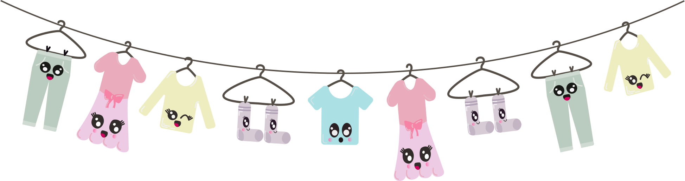
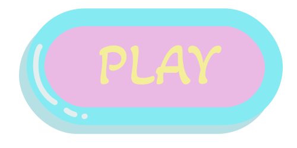

ANIMATION
TEMA 4
Læringsmål for tema 4
At introducere javascript og bruge javascript sammen med css animation til at skabe et lille spil. I udvikler jeres eget spildesign efter moderne konventioner og rentegner grafikken til spillet i Adobe Illustrator. At lære at fremstille interaktive brugergrænseflader der engagerer og motiverer brugeren
Hjemmesiden & Spillet
Besøg min hjemmeside, med spillet:
Emilieklestrup.dk/spil/DESIGNPROCESSEN
Stiludgangspunkt og skitser
Jeg valgte "Kawaii-stilen" som mit primære udgangspunkt for designet. I begyndelsen af designprocessen havde jeg mange ideer, men jeg besluttede mig for at inkorporere en mere almindelig "hverdagsting" for at appellere til et bredere publikum og større målgruppe. Herefter påbegyndte jeg udarbejdelsen af mine skitser og prototyper for spilelementerne og baggrundene.
Kawaii - kendetegn
Kawaii-stilen karakteriseres af sit søde udtryk med "baby basis", der inkluderer høj pande, store øjne, store kinder og små munde. Runde former, også kendt som "bouba"-effekten, bruges for at skabe et børnevenligt udseende. Figurerne er normalt symmetriske, men der forekommer også lidt asymmetri. "Solid drawing" anvendes for at give rummelighed med skygger og linjer. Ansigtstrækkene er overdrevet for at udtrykke tydeligt følelser. I mit spil gør jeg også brug af atypiske sure ansigter samt glade ansigter.
Spillet
Mit Spil omhandler, at skal trykke på alt det rene tøj for at få plus point. dermed, får man minus point ved at trykke på det beskidte tøj. Derudover, kommer der en bombe i ny og næ, som gør at man mister et liv, hvis man rammer den. Man skal ialt indsamle 10 point for at vinde spillet indenfor 30 sekunder. Man taber med at ramme 3 bomber eller ikke får indsamlet 10 stk rent tøj.
Aktivitets diagrammer
Jeg har udarbejdet to aktivitet diagrammer. Diagrammerne er med at til forstå spillets forløb, og hvilke regler der gør sig gældende.
JavaScript
I dette tema blev vi introduceret til JavaScript. JavaScript åbner op for en helt ny verden, der kan virke udfordrende i starten. Dog anvendes JS i dette tema, da det giver mulighed for at styre specifikke elementer. I dette tilfælde bruges JS til at kontrollere spilelementerne og deres position i spillet. JavaScript i mit spil har indflydelse på og styrer både de enkelte spilelementer, knapperne, tidsstyringen og selve spilforløbet, idet det placerer spilelementerne helt tilfældigt.
Prøv spillet
KONKLUSION - HVAD HAR JEG LÆRT?
I tema 4 har jeg fået kendskab til en ny metode inden for kodning. Jeg er netop blevet introduceret til JavaScript. Det har været en udfordrende start at forstå JavaScript og dets logik, men det er gradvist blevet lettere. Jeg kan konkludere, at JavaScript har evnen til at styre en bred vifte af elementer. I temaet har jeg også udviklet mine færdigheder inden for stil og designprocessen. Det har været en fornøjelse at designe og lære nye programmer at kende samt udfolde mig mere kreativt ved at tegne og anvende designprincipper. Alt i alt kan jeg konkludere, at jeg nu har kompetencer til at kode og designe et komplet spil på egen hånd